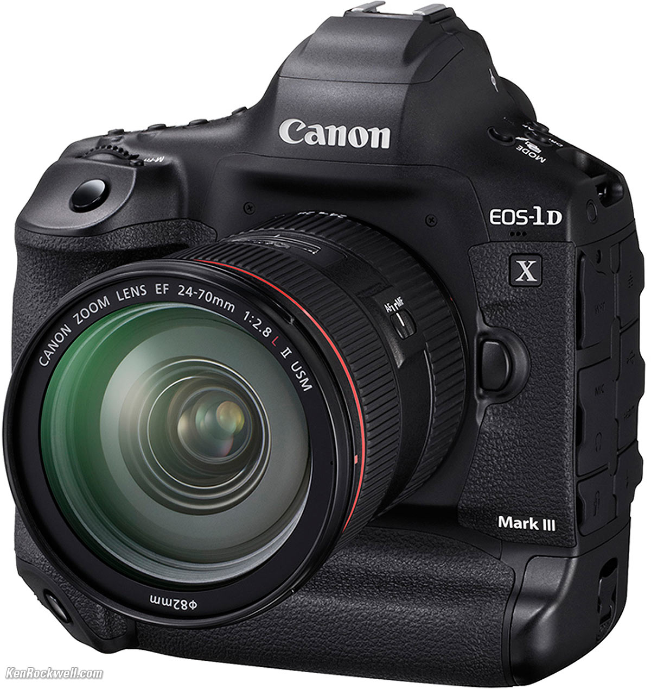
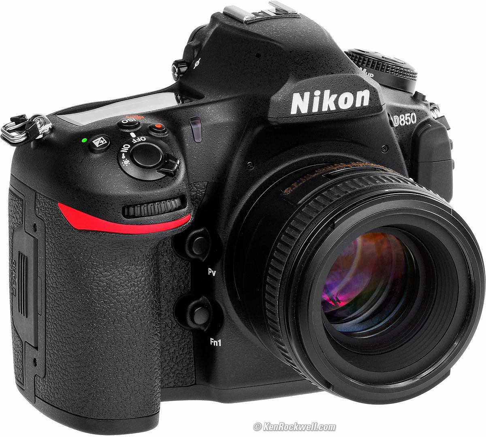
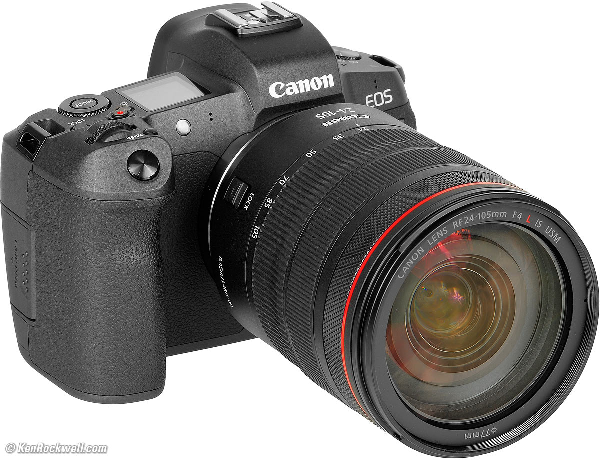
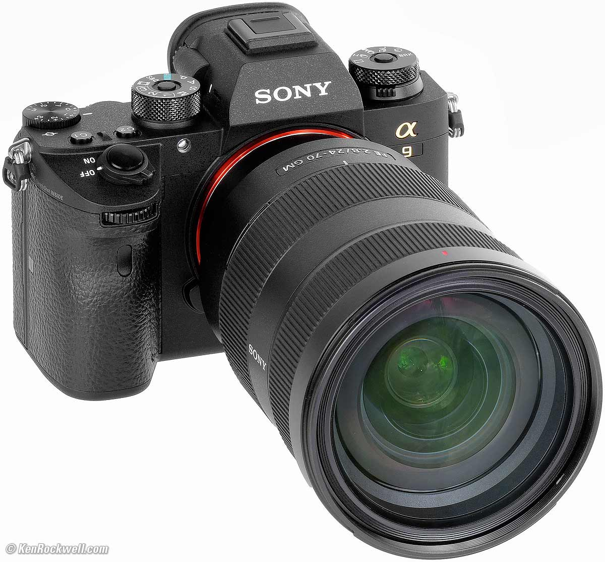

CAMERA BODIES

CANON 1DX MARK III
- 20 megapixel (5472 x 3648), Full frame (36 x 24 mm)
- ISO 100-102400 (expands to 50-819200)
- 16 FPS Shooting
- Digic X processor
- 5.5K/60p Raw video
- 191-point AF system
- 1440 g (3.17 lb / 50.79 oz)
LEARN MORE...

NIKON D850
- 40MP full-frame sensor
- 2.4M LED Screen
- tilting rear LCD
- Autofocus rated down to -6EV (with F1.2 lens)
- Up to 7.0 fps shooting
- UHD 4K @ 30p
- ISO 50-546,900
LEARN MORE...

CANON EOS R
- 30MP full-frame sensor with Dual Pixel autofocus
- 3.69M dot OLED viewfinder
- Fully articulated rear LCD
- Autofocus rated down to -6EV (with F1.2 lens)
- Up to 8 fps shooting
- UHD 4K @30p video from a 1.8x crop of the sensor
- Canon Log (10-bit 4:2:2 over HDMI)
LEARN MORE...
OUT OF STOCK

SONY A9
- 24MP full-frame Stacked CMOS
- Continuous shooting buffer of up to 241 compressed Raw files
- 20 fps continuous shooting with full AF (12-bit files)
- 10 fps continuous shooting with AF with adapted lenses
- 5-stop (estimated) 5-axis image stabilization
- 3.7M-dot OLED viewfinder with up to 120 fps update
- Oversampled UHD 4K/24p video from full sensor width
LEARN MORE...